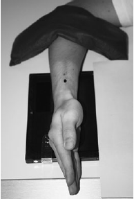

Scaphoid(Lateral)
Centering point:The vertical central ray is centred over the radial styloid
process

Cassette Size:24 x 30cm (10 x 12ins)
Landscape, divided in half usually fits 2 projections, use lead masking for unused area
Exposure Factors:50kVp on
5MaS
FFD:100cm
Bucky/Grid:No
Filter:No
Pathologies:Fractures, dislocations, foreign bodies. Pathological processes - osteoporosis and osteoarthritis
Position of patient and cassette
- From the posterior oblique position, the hand and wrist are
rotated internally through 45 degrees, such that the medial
aspect of the wrist is in contact with the cassette.
- The hand is adjusted to ensure that the radial and ulnar styloid
processes are superimposed.
- The hand and wrist are immobilized using non-opaque pads
and sandbags.